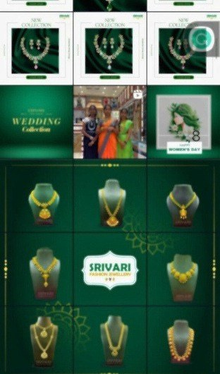
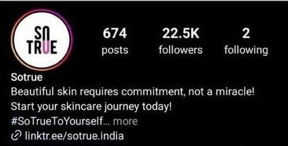

I don’t have
a style.I have twenty-five.
Social media manager in Ahmedabad. D2C fashion and lifestyle.
Every brand you follow has a voice. Someone has to be it.
For twenty-five of them, that someone is me. Eleven are public. Keep going and you will meet all eleven, one screen at a time.

The styles are theirs. The discipline is mine.
-
Content management
Several accounts at once. Planned, written, scheduled, approved, posted.
-
Designing and editing
Templates, grid rhythm, and the cut and crop that make a profile worth following, not just visiting.
-
Content strategy
What the account should say, settled before anyone designs a post.
-
Meta Ads
Paid campaigns on Facebook and Instagram, with reporting that explains the spend.
-
Positioning
Who the brand is talking to, and on which channels it is worth showing up.
-
Running the account
Approvals, deliverables, weekly reporting, invoicing, client retention.
Where it was learned
- 2026 Pixel SharkCurrent Project Manager, D2C Performance Marketing
- 2025–26 Onavid Social Media Manager and Content Strategist · Remote
- 2025 Digital Friend Social Media Manager · Ahmedabad
- 2024 creativcells Social Media and Project Manager · Remote
- 2024 Mylstone Digital Services Digital Marketing Executive
- 2023 MICA | The School of Ideas Postgraduate study, marketing · Ahmedabad
Hand me
the account.
Freelance projects and full-time roles both welcome. Ahmedabad, hybrid or remote.